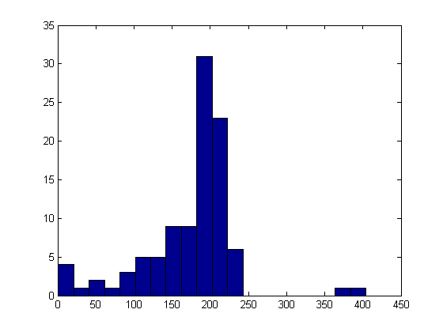

Using an image of rice grains, this example illustrates how you can enhance an image to correct for nonuniform illumination, then use the enhanced image to identify individual grains. You can then learn about the characteristics of the grains and easily compute statistics for all the grains in the image.
I = imread('rice.png');
imshow(I)Notice that the background illumination is brighter in the center of the image than at the bottom. Use the IMOPEN function to estimate the background illumination.
background = imopen(I,strel('disk',15)); % Display the Background Approximation as a Surface figure, surf(double(background(1:8:end,1:8:end))),zlim([0 255]); set(gca,'ydir','reverse');
Since the image and background are of class uint8, use the function IMSUBTRACT to subtract the background.
I2 = imsubtract(I,background); imshow(I2)
I3 = imadjust(I2); imshow(I3);
Create a new binary image by thresholding the adjusted image.
level = graythresh(I3); bw = im2bw(I3,level); imshow(bw)
The function BWLABEL labels all connected component in the binary image. The accuracy of your results depend on: the size of the objects, the accuracy of your approximated background, whether you set the connectivity parameter to 4 or 8, whether or not any objects are touching (in which case they may be labeled as one object). Some of the rice grains are touching.
[labeled,numObjects] = bwlabel(bw,4); % 4-connected numObjects % Count all distinct objects in the image.
numObjects = 101
Each distinct object is labeled with the same integer value. Crop part of a grain that is labeled with 50s.
rect = [105 125 10 10];
grain = imcrop(labeled,rect) % Crop a portion of labeled
grain =
0 0 50 50 50 50 50 50 50 50 0
0 0 50 50 50 50 50 50 50 50 0
0 0 50 50 50 50 50 50 50 50 0
0 0 50 50 50 50 50 50 50 50 0
0 0 50 50 50 50 50 50 50 50 0
0 0 50 50 50 50 50 50 50 50 0
0 0 50 50 50 50 50 50 50 50 0
0 0 0 50 50 50 50 50 50 50 0
0 0 0 50 50 50 50 50 50 0 0
0 0 0 50 50 50 50 50 50 0 0
0 0 0 0 50 50 50 0 0 0 0
A good way to view a label matrix is to display it as a pseudo-color indexed image. In the pseudo-color image, the number that identifies each object in the label matrix maps to a different color in the associated colormap matrix. Use LABEL2RGB to choose the colormap, the background color, and how objects in the label matrix map to colors in the colormap.
RGB_label = label2rgb(labeled, @spring, 'c', 'shuffle'); imshow(RGB_label)
The REGIONPROPS command measures object or region properties in an image and returns them in a structure array. When applied to an image with labeled components, it creates one structure element for each component. Use regionprops to create a structure array containing some basic properties for the labeled image.
graindata = regionprops(labeled,'basic')
graindata =
101x1 struct array with fields:
Area
Centroid
BoundingBox
% To find the area of the component labeled with 50s, use dot notation to % access the Area field in the 50th element in the graindata structure % array. graindata(50).Area
ans = 203
Create a new vector allgrains which holds the area measurement for each grain
allgrains = [graindata.Area];
max_area = max(allgrains) % Find the maximum area of all the grains.max_area = 404
biggrain = find(allgrains==max_area) % Find the grain number that has this area.
biggrain =
59
mean(allgrains) % Find the mean of the area of all the grains.ans = 175.0396
nbins = 20; figure,hist(allgrains,nbins)